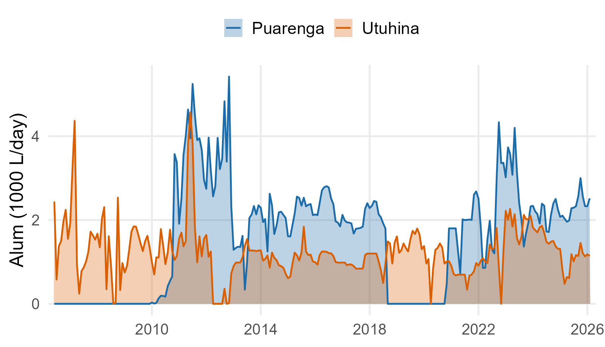
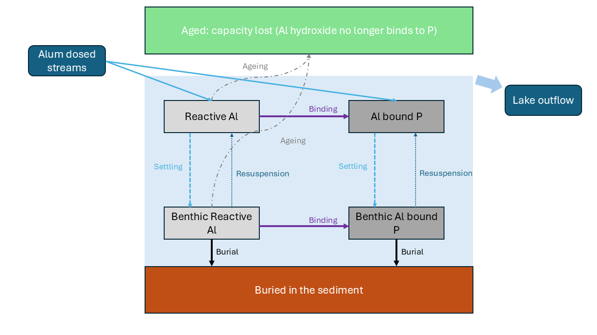
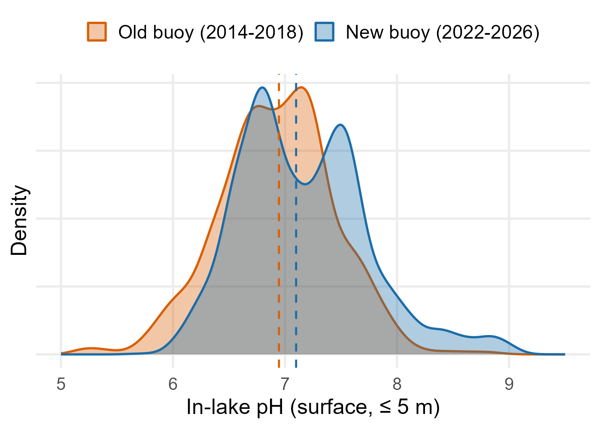
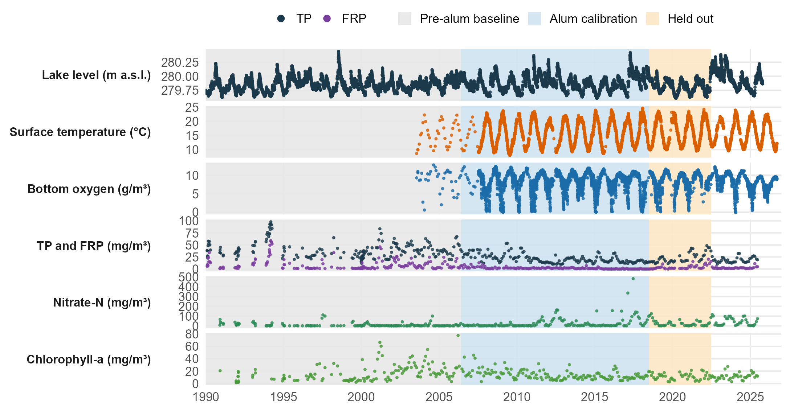
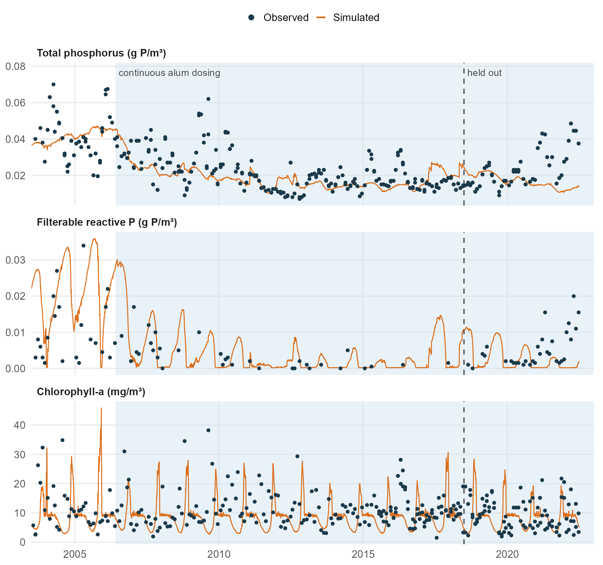
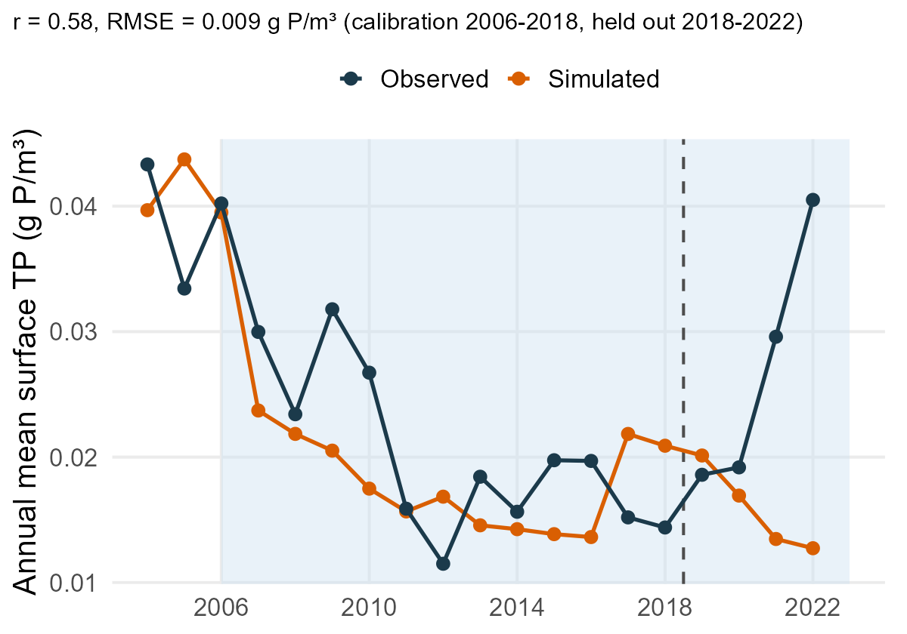
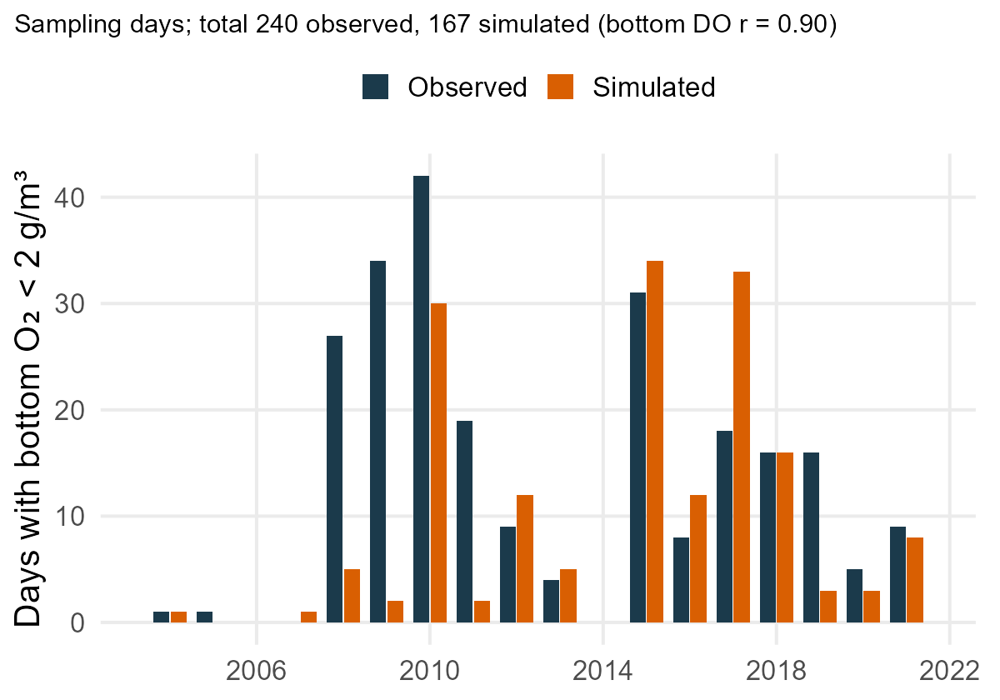
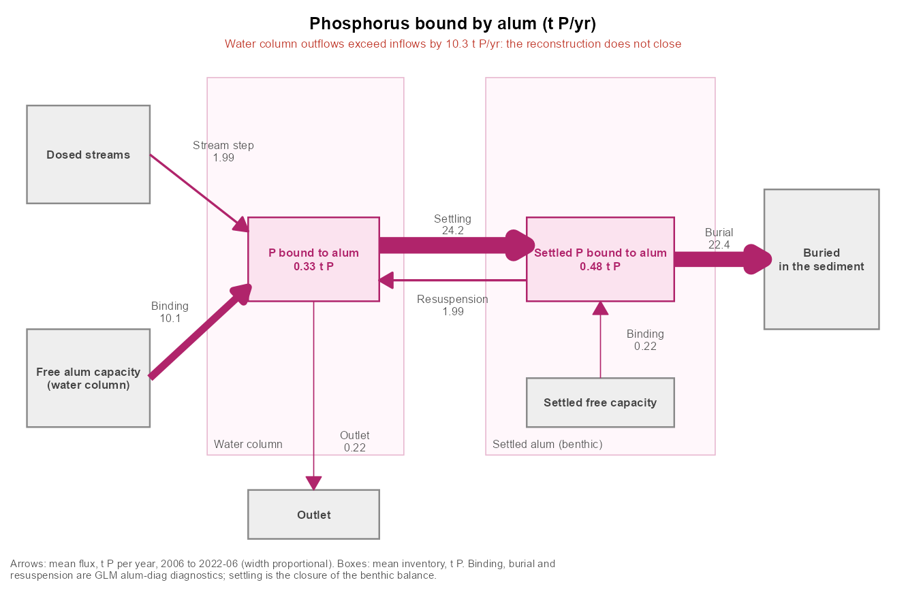
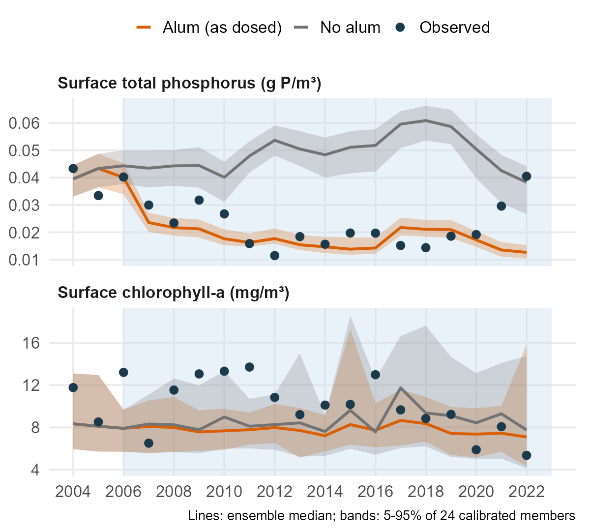
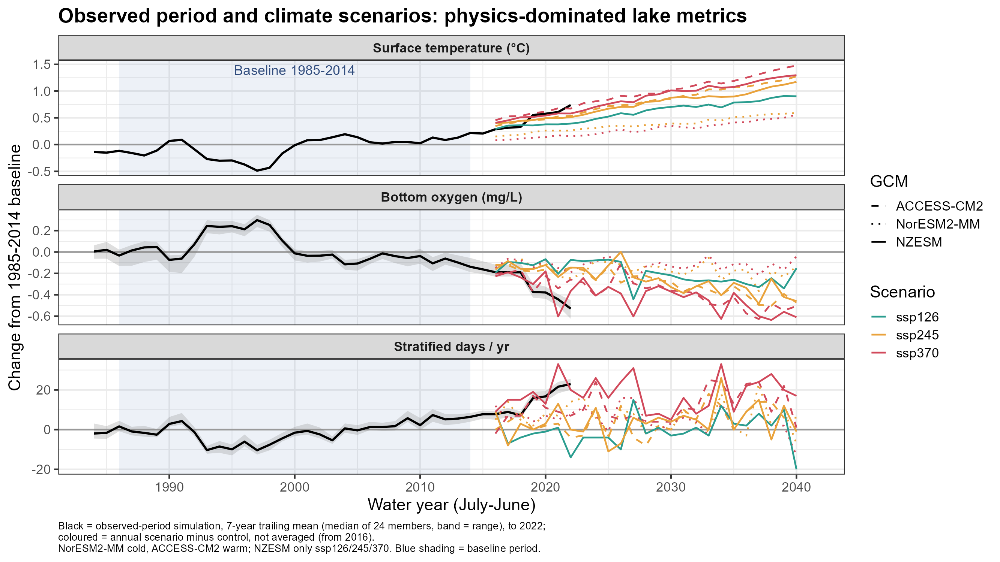

From dose to decision
A process-based model for continuous alum treatment in lakes
![]()
LimnoTrack
University of Waikato
University of Western Australia
University of Western Australia
2026-12-03
Why alum, and why a model?
The problem
- Excess phosphorus (P) loading still drives eutrophication in lakes worldwide
- Alum (aluminium sulfate) is widely used to reduce P availability
- The chemistry of Al–P binding is well understood
- But dose-to-outcome tools remain largely empirical
The gap
Existing lake models cannot explicitly link alum dosing strategy to lake-scale P dynamics and long-term water quality.
Lake Rotorua: a rare long record
- Bay of Plenty, Aotearoa New Zealand
- Warm polymictic, eutrophic, history of cyanobacterial blooms and bottom-water anoxia
- Continuous alum dosing of the Utuhina (since 2006) and Puarenga (since 2010) streams
- Long monitoring record of lake, streams and outlet

Question and approach
Can we build a mechanistic representation of continuous alum treatment inside a full lake model, and use it to inform dosing decisions?
- Develop an alum module for GLM-AED
- Calibrate and evaluate on 20+ years of Rotorua dosing
- Use it to test treatment scheduling
- Scenarios: is alum alone enough?
The model
The GLM-AED alum module

Box and arrow diagram of the AED alum module.
Process by process
| Process | Representation |
|---|---|
| Delivery | Alum dose carried by treated inflows (dose ratio set per stream) |
| Water-column uptake | Second-order kinetics, Alr × PO4, temperature (Q10) scaling |
| Settling | Gravitational settling of floc to the bed (wala) |
| Sediment binding | Continued P uptake at the sediment–water interface |
| Ageing | First-order loss of reactivity (kage, water and sediment) |
| pH modifier | Gaussian efficiency response f(pH), peaks near neutral |
\[R_{bind} = k_{20}\,Q_{10}^{(T-20)/10}\,f(pH)\,Al_r\,PO_4\]
Why pH matters
- Binding efficiency falls away from near-neutral pH
- Rotorua pH varies substantially (summer photosynthesis raises it)
- Module includes a pH modifier; transferable to higher-pH systems

Calibration and evaluation
Staged calibration
- Physics: water balance, temperature, light, oxygen
- Biogeochemistry before alum (pre-alum record, ~1990-2005)
- Alum parameters, with the pre-alum fit fixed
- Oxygen / anoxia re-check with alum on
- Targets: lake TP, FRP, chlorophyll, nitrate, bottom DO and anoxic days
- Pre-alum period gives a clean “no treatment” baseline
What data constrain the model?

How well does it reproduce the lake?

- Calibrated on 2006–2018, evaluated on 2018–2022 (held out)
- TP tracks the long decline after dosing began; chlorophyll-a is simulated at the right level
- Honest misfit: the 2021–22 TP/FRP rebound is not reproduced (suggests event-driven external load or alum-P release)
Annual TP and bottom-water anoxia


- Annual TP: r = 0.58, RMSE 0.009 g P/m³; the post-2016 rise and the 2021–22 rebound are missed
- Bottom DO r = 0.90; anoxic sampling days 167 simulated vs 240 observed, with the wet years 2008–2011 under-predicted
Where does the alum and P go?

- ~52 t Al yr-1 applied, ~12–17 t P yr-1 removed
- ~97% of alum-bound P ends buried
Alum ageing
Most reactive capacity ages out in the water column before reaching the bed
Using the model for decisions
What the framework lets us ask
- Scheduling: frequency and timing of doses (seasonal, flow-proportional, event-based)
- Where P is removed: water column vs sediment-based removal
- Inflow conditions: how flow, temperature and pH change treatment outcomes
- Efficiency: Al applied per unit P removed
What does the alum do? On versus off

- 24 calibrated ensemble members, each run with the alum dose as applied and set to zero in every inflow
- 2007–2022 mean surface TP: 0.018 vs 0.050 g P/m³, a 64% reduction (5–95% range of members: 54–69%)
- Chlorophyll-a: 7.9 vs 9.0 mg/m³, a 10% reduction, but the range spans −36% to +3%, so the effect is not robust
- Bottom-water anoxia: no consistent change (members differ by −40 to +25 sampling days over 2004–2022)
- Model-based: the lake was dosed, so the “no alum” run has no observations to check against
Is alum alone enough?
- Next step: scenarios under alternative management
- Alum only
- Alum + catchment load reduction
- Climate-adjusted conditions
- Compare against lake water quality targets
Climate Scenarios (preliminary)

Take-home
Key messages
- A process-based alum module in GLM-AED links dose → floc → P binding → lake outcomes
- 20+ years of Rotorua dosing allow calibration and evaluation rarely possible elsewhere
- Supports decisions on when and how much to dose, and whether alum alone is enough
- Designed to transfer to any lake considering alum or similar coagulants
Acknowledgements and contact
TODO: funders, partners, Bay of Plenty Regional Council, data providers, co-authors, contact details / QR code to repo or website
Lake Science in Action: Processes, Predictions and Restoration